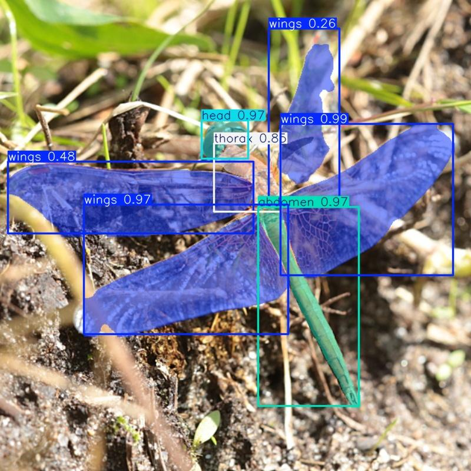
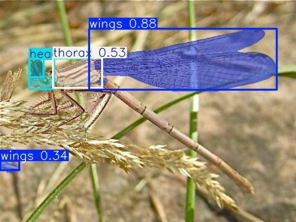
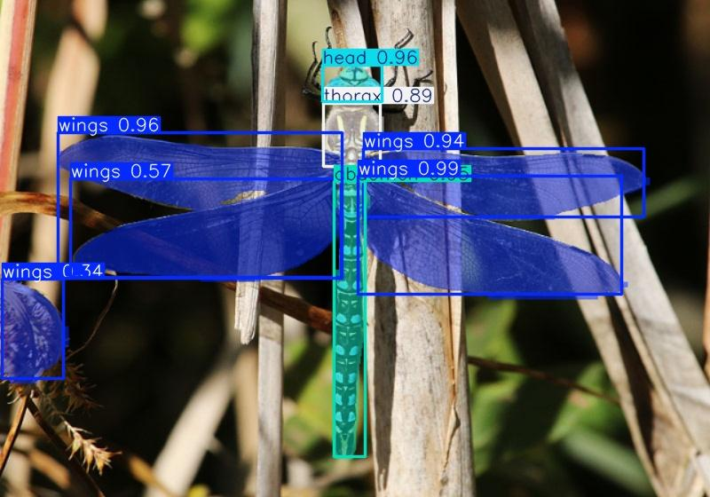
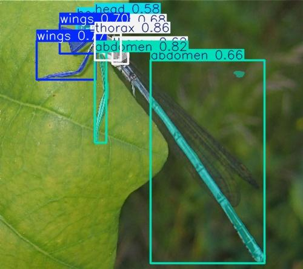
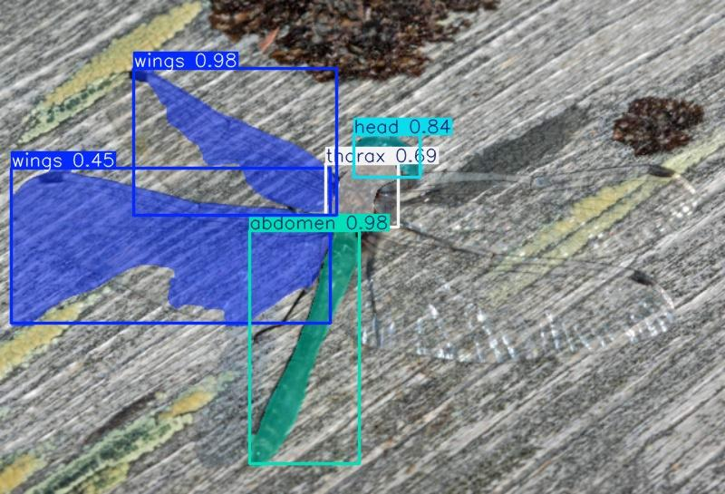

| A | B | C | D | E | F | |
|---|---|---|---|---|---|---|
1 | Yes | Yes, only all seven parts (the head, thorax, abdomen and four wings) are present and recognised by the model |  | No | No, one or more of the three main parts (the head, thorax and abdomen) is not detected in the image |  |
2 | Yes, all seven parts (the head, thorax, abdomen and four wings) are present and recognised by the model. In addition to this, there are other objects misrecognized by the model. |  | No, one of the three main parts (the head, thorax and abdomen) is misclassified |  | ||
3 | Yes, the three main parts (the head, thorax and abdomen) are recognised, and there can be some discrepancies with the wings, and/or some misrecognised objects. |  |